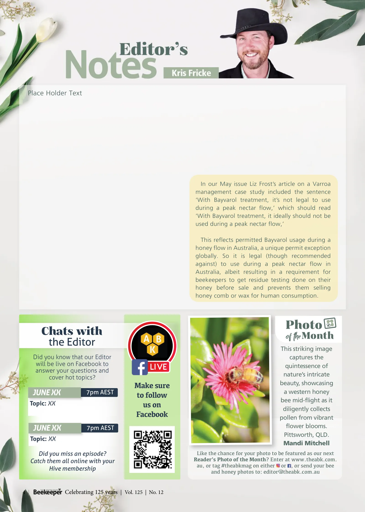

Like the chance for your photo to be featured as our next
Reader’s Photo of the Month? Enter at www.theabk.com.
au, or tag #theabkmag on either or , or send your bee
and honey photos to: editor@theabk.com.au
Place Holder Text
In our May issue Liz Frost’s article on a Varroa
management case study included the sentence
‘With Bayvarol treatment, it’s not legal to use
during a peak nectar flow,’ which should read
‘With Bayvarol treatment, it ideally should not be
used during a peak nectar flow,’
This reflects permitted Bayvarol usage during a
honey flow in Australia, a unique permit exception
globally. So it is legal (though recommended
against) to use during a peak nectar flow in
Australia, albeit resulting in a requirement for
beekeepers to get residue testing done on their
honey before sale and prevents them selling
honey comb or wax for human consumption.
This striking image
captures the
quintessence of
nature’s intricate
beauty, showcasing
a western honey
bee mid-flight as it
diligently collects
pollen from vibrant
flower blooms.
Pittsworth, QLD.
Mandi Mitchell
Did you know that our Editor
will be live on Facebook to
answer your questions and
cover hot topics?
Chats with
the Editor
Make sure
to follow
us on
7pm AEST
JUNE XX
Topic: XX
7pm AEST
JUNE XX
Topic: XX
Did you miss an episode?
Catch them all online with your
Hive membership
4 |
Celebrating 125 years | Vol. 125 | No. 12